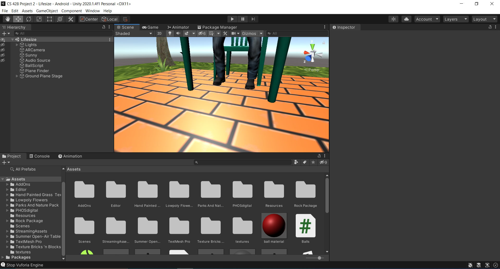
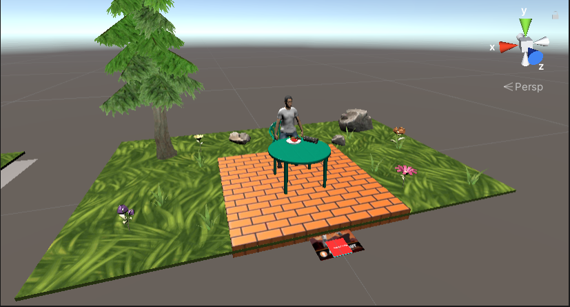
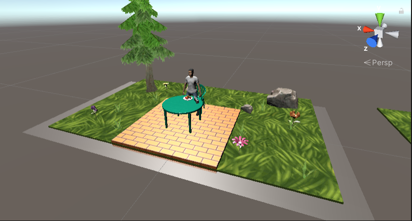
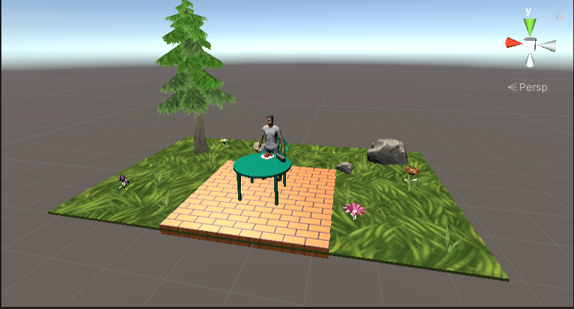

Tabletop and Lifesized Augmented Reality
Introduction
This project is focused on demonstrating additional uses of augmented reality on both a tabletop and lifesize scale. This is done by displaying a virtual version of myself using an action figure onto a playset. The playset also contains an animated figure with a Vuforia button to be able to use in augmented reality, along with enabled collision using balls that can be spawned in by clicking within the scene.
Demonstration
Instructions
Recommended - Unity 2019.4.1f1 and Vuforia 9.
Run the application in the Unity interface.
Requires a webcam or other camera.
Also requires Vuforia Mars Fiducial Markers to display each widget.
Images include the following:
- Astronaut Marker - Basic Table Top Playset
- Drone Marker - Actual Table Top Playset with Physics
Download Unity3D - https://unity3d.com/
Install the following from UnityHub:
- Unity
- Documentation
- Windows Build Support (Mono)
- Mac Build Support if you want to develop on a Mac
- Linux Build Support if you want to develop on a Linux machine
After finishing Unity installation of 2019.4.1f1 with Unity Hub, create a Vuforia developer account: Vuforia Link
Download and install the project: Tabletop and Lifesized Augmented Reality Download
Download the images: Mars Markers
{kind=link}
Open project with Unity.
Open whichever scene that you want to use.
The Tabletop scene allows the use of both the interactive and the table top views using the Vuforia image targets.
The Lifesize scene does not require a Vuforia image widget.
Have the astronaut and the drone images which can be found in the images linked above, can be either an actual printed picture or a web image brought up on phone or other device.
The scenes:
- Tabletop - Shows the tabletop and basic playset
- Lifesize - Shows the lifesized playset
How the "Tabletop" scene should look when opened.

How the "Lifesize" scene should look when opened.

The basic playset with Vuforia button to control animation and sound.

The tabletop playset which has collision and physics capabilities.

The lifesize playset which scales the playset to a more realistic size.
Resources Used:
Unity Assets:
- Food pack - 3D Microgames Add-Ons by Unity Technologies
- Hand Painted Grass Texture by LowlyPoly
- HQ PBR Old Retro Radio (Free)y by PHOS digital
- Lowpoly Flowers by chlyang
- Parks and Nature Pack - Lite by Gamemag Creation Studio
- Rock package by shui861wy
- Summer Open-Air Table And Chair by 3 WHITE LINES
- Texture Pack Bricks 'n Blocks by GlowFox Games
- Sunny Day Sound by stephan
Project Conclusion
This project looks at the potential uses of augmented reality using play sets that are both tabletop and life-sized using models which are animated and have collision. In the future, I believe that there can be a couple uses of this technology, especially using augmented reality glasses which will become more common in the future. From being used by kids in a simulation style game, and by how unique the possibilities are in being able to see yourself and interact with objects in augmented reality, using modeled play sets have much potential.
One main reason for the use of play sets such as this would be to allow kids to play a simulation style game in augmented reality. By being able to interact with objects on a screen in real life is a major aspect of this technology which can be seen as being unique, especially through the use of Vuforia buttons enabling us the ability to control things within a scene. As technology advances and with more work, with larger teams with specialization, a lot of benefits can come with this by better designed models, better interaction with the ability to do more than just a simple animation, such as a full on simulation styled game. I believe that kids would really enjoy doing this as you can have the ability to make the figure do whatever you want, such as things that you would not even imagine such as be in outer space or in the deep parts of the ocean or even in a fictional land or area. I believe this aspect can be cool for kids to enjoy because it would open their imagination to all sorts of new outcomes and the that you can be able to interact within the scene improves this even further.
Not only would this technology be useful for kids, but it would also be useful to help display applications of things working in real life. For instance, they can be used such as blueprints for architects or for project leaders to demonstrate people’s individual tasks by using life-sized models which can display more information in an interactive way. Normally it would be much more difficult to do this by just having standard images, but an interactive display like the scenes that we built would display and highlight some of these points in a clearer way.
This project also showcases the different uses of using a smaller desk figure and a life-sized figure in augmented reality. Each one has their own major benefits and disadvantages. For instance, a life-sized figure has the benefit of being able to reflect the virtual world to a realistic size and setting, especially if you want to showcase a real sized model of yourself. However, it requires much more space to do this, along with generally having a good camera and large display to show the entire setting more easily. The smaller desk sized figure has a benefit of not requiring as much space and the ability to be used freely almost anywhere, while it might be the most realistic way to show the objects within the scene.
As a result, augmented reality featuring play sets can have multiple benefits for both kids and adults in many ways, from being used in a simulation game to inside a workplace environment. Likewise, the different sizes of these play sets also have specific uses for each situation that can be used beneficially for the task and the equipment that we have, and thus these play sets clearly have many useful uses in our society today.